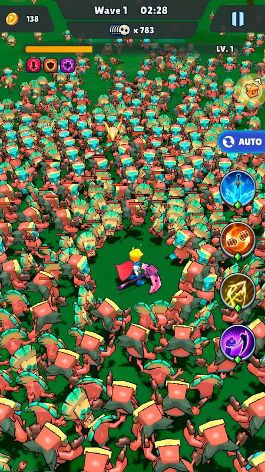
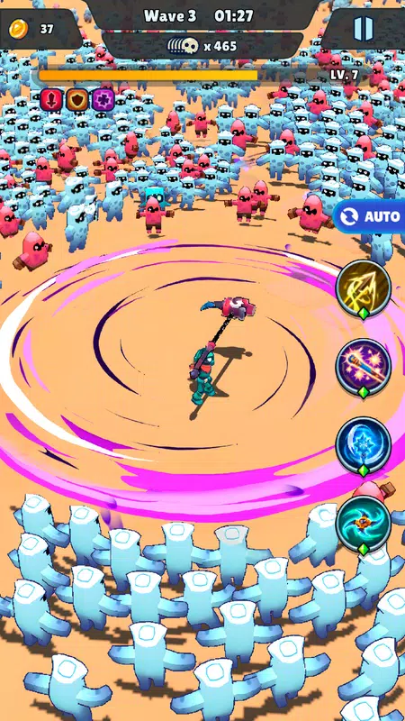
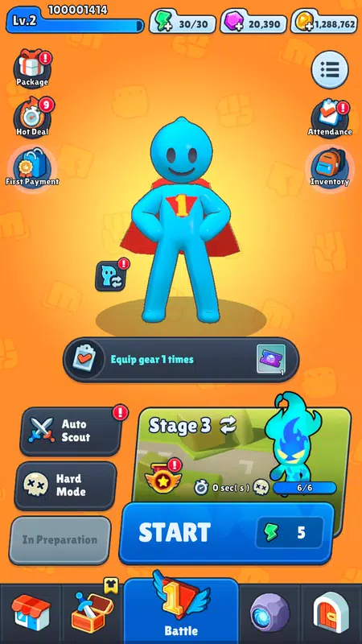
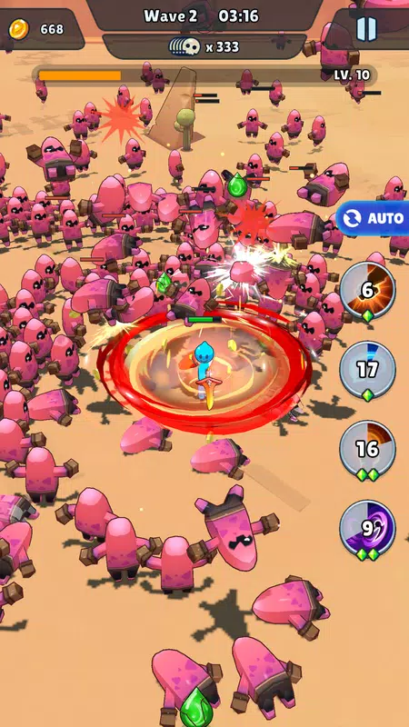

검, 활, 낫, 건틀렛 등 다양한 무기와 스킬 조합으로 끝없이 몰려드는 적을 쓸어버리는 핵앤슬래시 액션 서바이벌 게임입니다.
개요
사막, 도시, 묘지 등 다양한 맵을 돌파하며 무기를 자유롭게 갈아 끼우고, 90여 종의 스킬을 진화·조합해 나만의 전투 스타일을 만드는 대난투 무쌍 액션입니다. 시련 모드에서는 몬스터와 캐릭터 난이도를 직접 조정해 즐길 수 있습니다.




주요 기능
- 검·활·낫·건틀렛 등 무기 자유 장착 및 교체
- 90여 종 스킬의 진화·조합 시스템
- 사막·도시·묘지 등 다양한 맵과 보스전, 난이도 조절 시련 모드
맡은 역할 & 기여
- Third-Party SDK 프로젝트에 적용하는 과정 중에 나오는 오류 수정
- 에셋 관리(Addressable)
- 기획·아트와 협업하며 인게임 연출 및 UI 작업 진행
기술적 도전 & 해결
다수의 캐릭터가 동시에 전투하는 상황에서 프레임 저하가 발생해, 불필요한 연산과 오브젝트 생성을 줄이는 방향으로 최적화를 진행했습니다.
회고
성능과 연출 사이에서 균형을 잡는 감각을 많이 배운 프로젝트였습니다.